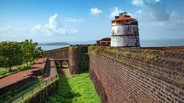
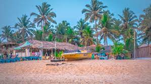
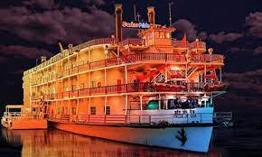
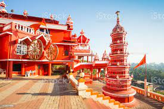
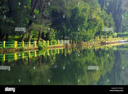
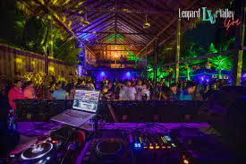
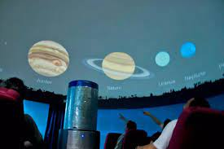

Fort Aguada
Aguada in North Goa is the place if you are looking for sun, surf and sand. Aguada beach differs from all other beaches in Goa for the bevy of historical attractions and forts it offers in addition to sun and the sand. The unspoiled beaches standing against the backdrop of centuries old citadels is a hot favourite among tourists, especially honeymooners. Thousands flock to experience the sun and the beauty of the citadels. It is home to the famous Aguada Fort. Currently being used as a jail, Fort Aguada has witnessed many battles and historical moments, some of which have had a direct impact on the health of the fort itself. The tower bell which survived centuries of weather and movements before being installed in the Church of Lady of Immaculate Conception, stands mute testimony to the impressive history of Fort Aguada.

Calangute Beach
Calangute beach in Goa is also known as the Queen of Beaches. The period from November to February is the most pleasant to visit here. It's 15km from the capital city Panjim. The beach itself isn't anything special, with steeply shelving sand, however it's capacity is large enough to accommodate the huge number of high-season visitors.
The Calangute beach is usually crowded and the small resorts thrive in business during the holiday season. It is one of the most popular beach in Goa with a host of facilities to cater to visitors, including golden sand along the beach and water sports.

Cruise in Goa
India’s first cruise liner offers once in a lifetime experience of sailing from Goa to Mumbai and back. Angriya is the first domestic cruise in India which is fully equipped with great comfort and 25 marine & 60 hospitality personnel to offer the best cruising experience in India.
The sea route between Goa and Mumbai is an ancient one but has remained untravelled for a long time. The route has impressive forts and lighthouses and picturesque surroundings which make it all the more attractive.
Water Sports in Goa
Goa is an adventure in itself but it is the water sports in Goa which provide the majority of fun. Even if you are not an adventure seeker, get ready to experience ultimate adrenaline rush. The land of ‘Sun, Sand and Sea’ offer a range of thrilling water sports. There are adventures throughout the year and some are season specific.
Water Sports in Goa include:
Windsurfing, Jet skiing, Speed boats, Scuba Diving & Snorkeling, River Rafting, Knee-and-Wake boarding, Banana tube boat ride etc.

Maruti Temple
The Maruti temple is situated on top of of the Altinho hillock overlooking the Fontainhas district in Panaji, the capital of Goa. It is dedicated to lord Hanuman, the monkey god and enshrines Lord Hanuman as the presiding deity.
Near the Maruti temple on the southern edge of Fontainhas, the Fontainhas of Phoenix spring is situated from which it derives its name. This spring has three tanks where water collects from the mountain before flowing into a reservoir. It was once the lifeline of the area and even today it is in use.
The Maruti temple is also beautifully lit up at night and as it is brightly lit the temple is visible from a distance.

Mayem Lake
Mayem lake is the most famous lake in Goa. The lake is located in Bicholim taluka in north Goa. The lake itself sits on wooded shores in a landscape of low hills. Birdlife is plentiful here, with a variety of birds making their home on the shores of the lake. The lake is one of the few places where tourists can enjoy a romantic ride in the lake in a paddle boat. The lake is also a great spot for birdwatchers to catch glimpses of migratory birds in Goa. Picturesque surroundings and boating in paddle boats are the key tourist attractions of the place.

Leopard Valley Goa
Located in the green and serene locales of Palolem in Canacona, South Gia Leopard Valley Goa is unique party spot which is situated in the laps of a jungle quarry with all the facilities you need to enjoy the evening at a nightclub. The thick foliage and the canopy of the trees provides a fresh and different perspective on partying. Decorated with psychedelic trance settings, laser lights, and fire pits and numerous world famous DJs and Musician’s performance and abundant supply of food and drinks all over the night, you would wish not to return to your regular routine once you visit this place.
It is well-known to be one of the biggest and most happening night clubs in South Goa and makes the experience worthwhile with exciting pyrotechnics and thumping music blasting from modern speaker systems. It usually hosts parties every weekend but is thronged by people throughout the week.

Goa Science Centre & Planetarium
Goa Science Centre & Planetarium located in Miramar is a science museum that expands over an area of 5 acres and houses a Planetarium, a theatre for 3D shows, and several scientific exhibits. Quite a few programs are also conducted to demonstrate scientific principles to the public. It was established as a joint project of the state Department of Science, Technology & Environment and the National Council of Science Museums with the objective of making science exciting for the youth and inculcating a desire to learn the subject.